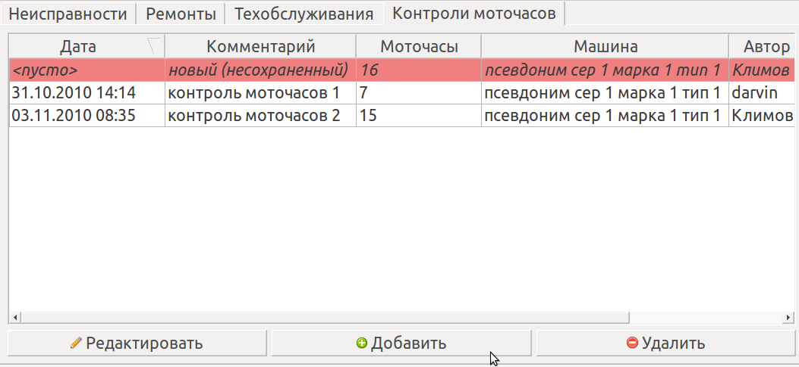

События отображаются в таблице событий в правой части главного окна программы

Вкладки в верхней части служат для выбора типа событий - техобслуживаний, ремонтов, неисправностей или контролей моточасовТаблица событий может быть отсортирована по конкретному столбцу путем щелчка по его заголовку. Также размер столбцов может быть изменен путем перетаскивания их границ. Изменения запоминаются и восстанавливаются при повторном запуске программы.
Для фильтрации событий, относящихся к конкретным типу, марке или единице оборудования необходимо выбрать тип, марку или единицу в дереве оборудования
События, созданные только что и еще не синхронизированные с сервером, выделяются наклонным шрифтом и розовым цветом. Только такие события можно редактировать или удалять
События, при добавлении которых на сервер произошла ошибка, выделяются ярко красным цветом.
Кнопка "Добавить" служит для добавления события. Она доступна, только если в дереве оборудования выбрана единица оборудования - будет добавленно событие для этой единицы оборудования. После ее нажатия отображается окно добавления события
Кнопка "Редактировать" служит для редактирования события. Она доступна, только если в таблице событий выделенно несинхронизированное (розовое) событие. При нажатии на нее отображается окно редактирования события
Кнопка "Удалить" служит для удаления события. Она доступна, только если в таблице событий выделенно несинхронизированное (розовое) событие.